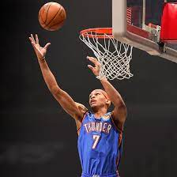
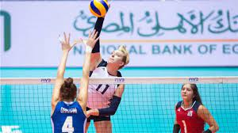
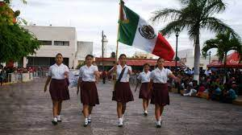
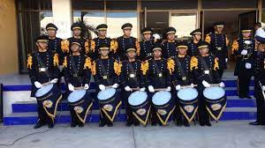
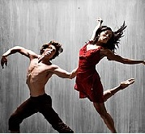
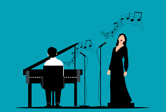

BASKETBALL
 El básquetbol es un deporte de pelota que se juega en 2 equipos de 5 jugadores cada uno. Cada equipo tiene una canasta, la cual debe defender. El objetivo de los jugadores es llevar la pelota a la canasta del equipo contrario y tirarla dentro para anotar puntos.
VOLEYBALL
 El voleibol, balonvolea o simplemente voley, es un deporte donde dos equipos se enfrentan sobre un terreno de juego liso separados por una red central, tratando de pasar el balón por encima de la red hacia el suelo del campo contrario.
FOOTBALL
deporte de equipo jugado entre dos conjuntos de once jugadores cada uno, mientras los árbitros se ocupan de que las normas se cumplan correctamente. Es, ampliamente, considerado el deporte más popular del mundo, pues lo practican unas 270 millones de personas.
ESCOLTA
 Tiene como propósito conducir y brindar protección al lábaro patrio en las ceremonias de honores a la bandera, cívicas, especiales y desfiles. Se integra por seis elementos, pudiendo ser femenil, varonil o mixta.
BANDA DE GUERRA
 Una banda de música militar es una agrupación musical encargada de la ejecución de marchas militares para acompañar eventos militares tales como desfiles, ceremonias oficiales, etc. Cada banda es encabezada por un director musical y tiene un elevado número de músicos
PINTURA
La pintura es el arte de la representación gráfica utilizando pigmentos mezclados con otras sustancias aglutinantes, orgánicas o sintéticas. En este arte se emplean técnicas de pintura, conocimientos de teoría del color y de composición pictórica, y el dibujo.
DANZA
 La danza o el baile es un arte donde se utiliza el movimiento del cuerpo, normalmente con música, como una forma de expresión y de interacción social con fines de entretenimiento y artísticos.
CANTO
 El canto es la emisión controlada de sonidos del aparato fonador humano (voz), siguiendo una composición musical. El canto también ocupa un lugar importante dentro de la música, ya que permite incorporar texto a la obra. (Y también puede darse sin texto, sólo vocalizando como un instrumento).
MÚSICA
La música es una manifestación artística y cultural de los pueblos, de manera que adquiere diversas formas, valores estéticos y funciones según su contexto. A la vez, es uno de los medios por el cual un individuo expresa sus sentimientos. La persona que pone en práctica la música o la ejecuta por medio de un instrumento se llama músico.
TEATRO
 El teatro es la rama de las artes escénicas relacionada con la actuación. Representa historias actuadas frente a los espectadores o frente a una cámara usando una combinación de discurso, gestos, escenografía, música, sonido y espectáculo.
El teatro es la rama de las artes escénicas relacionada con la actuación. Representa historias actuadas frente a los espectadores o frente a una cámara usando una combinación de discurso, gestos, escenografía, música, sonido y espectáculo.